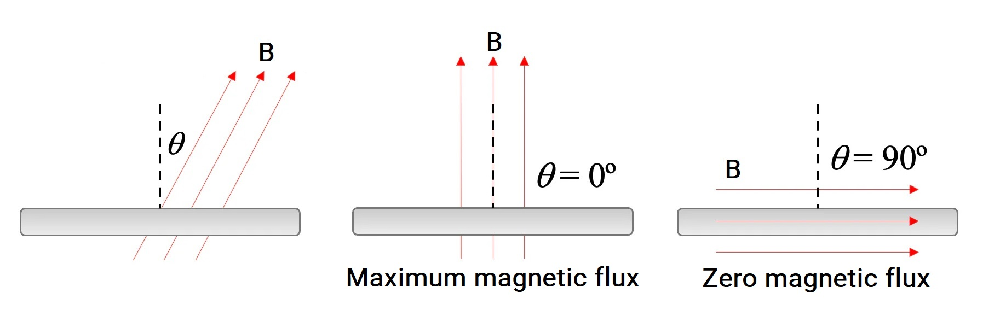
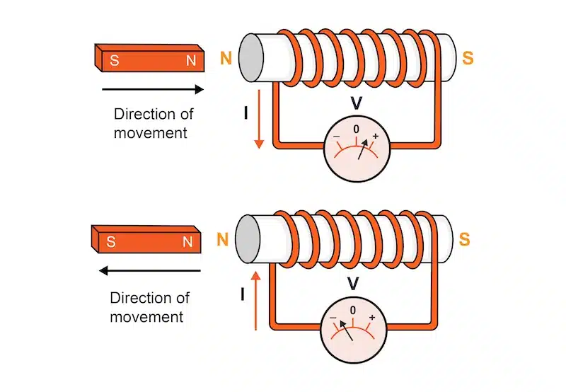

Закон електромагнітної індукції#
Видатний англійський науковець Майкл Фарадей поставив перед собою амбітну мету, яку занотував у березні 1821 року: здійснити перетворення магнетизму в електрику. Знадобилося десять років наполегливих експериментів, і 29 серпня 1831 року вчений досягнув значного прориву — він уперше отримав електричний струм за рахунок магнітного поля. Цьому явищу Фарадей дав назву індукційний струм. Розглянемо детальніше, які фізичні умови необхідні для виникнення цього струму та як можна визначити його характеристики.
Експериментальне виявлення електромагнітної індукції#
Розглянемо серію експериментів, які демонструють сучасну інтерпретацію класичних дослідів Фарадея.
Експериментальні спостереження
Перший експеримент. Якщо з'єднати котушку з гальванометром та вводити в неї постійний магніт, можна спостерігати відхилення стрілки гальванометра, що свідчить про появу електричного струму. Варто зауважити, що швидкість руху магніту прямо впливає на силу струму - чим швидше рухається магніт, тим більше відхиляється стрілка. При зупинці магніту струм зникає, а стрілка повертається до нульової позначки. Цікаво, що при вийманні магніту з котушки стрілка відхиляється в протилежний бік, демонструючи зміну напрямку струму. Також якщо тримати магніт нерухомо, але рухати саму котушку, в ній також виникає електричний струм.

Рис. 1. Ілюстрація до вищевказаного експерименту Фарадея.
CC BY-SA 4.0, Посилання. Wiki
Другий експеримент. При розміщенні двох котушок (А і В) на спільному осерді, де котушка А з'єднана з джерелом струму через реостат, а котушка В замкнена на гальванометр, можна спостерігати цікаве явище. Коли відбувається замикання чи розмикання кола котушки А або зміна сили струму в ній за допомогою реостата, в котушці В з'являється електричний струм. Важливою особливістю є те, що струм виникає як при збільшенні, так і при зменшенні сили струму в котушці А, але напрямки цих індукованих струмів в котушці В в кожному випадку будуть різними.
Третій і четвертий експерименти. При розташуванні котушки, замкненої на гальванометр, біля полюса потужного магніту і її різкому повороті гальванометр фіксує появу електричного струму. Електричний струм також виникає при зміні площі самої котушки (що можливо, якщо вона намотана на еластичний гумовий каркас).
Аналіз цих чотирьох експериментів дозволяє зробити важливий висновок: індукційний струм у замкненому провідному контурі виникає тоді, коли змінюється кількість ліній магнітної індукції, що проходять через поверхню, обмежену цим контуром.

Рис. 2. Експеримент Фарадея, що показує індукцію між витками дроту: рідинна батарея (справа) дає струм, який протікає через невелику котушку А, створюючи магнітне поле. Коли котушки нерухомі, струм не індукується. Але коли маленька котушка А вставляється або вилучається із великої котушки В, виникає струм, який реєструється гальванометром G.
Автор: J. Lambert - Downloaded 2009-08-06 from Arthur William Poyser (1892) Magnetism and electricity: A manual for students in advanced classes, Longmans, Green, & Co., New York, p.285, fig.248 on Google Books. The drawing is signed Lambert, J., Суспільне надбання (Public Domain), Посилання. Wiki

Рис. 3. Через соленоїд ліворуч протікає змінний електричний струм, створюючи змінне магнітне поле. Це поле за допомогою електромагнітної індукції викликає електричний струм у дротяній петлі справа.
By Ponor - Own work, CC BY-SA 4.0, Link. Wiki
Фізичне поняття магнітного потоку#
Для кількісного опису ліній магнітної індукції, що пронизують певну поверхню, у фізиці використовують спеціальну величину - магнітний потік (інша назва - потік магнітної індукції). Розглянемо плоский замкнений контур, розміщений у магнітному полі. Перпендикуляр \(n\) до поверхні, обмеженої контуром, утворює з вектором магнітної індукції \(\vec{B}\) кут \(\alpha\).
Магнітний потік (потік магнітної індукції) \(\Phi\) - фізична величина, що визначається добутком модуля магнітної індукції \(B\), площі поверхні \(S\) та косинуса кута \(\alpha\) між вектором магнітної індукції і нормаллю до поверхні:
\[\Phi = BS\cos\alpha\]
У Міжнародній системі одиниць (СІ) одиницею вимірювання магнітного потоку служить вебер (Вб, Wb), названий на честь німецького фізика Вільгельма Вебера:
Один вебер відповідає магнітному потоку, створеному однорідним магнітним полем з індукцією 1 тесла, що пронизує перпендикулярну до ліній індукції поверхню площею 1 квадратний метр:
Важливі властивості магнітного потоку:
Магнітний потік досягає максимального значення, коли поверхня розташована перпендикулярно до ліній магнітної індукції (тобто, коли перпендикуляр \(n\) є паралельним лініям магнітного поля), і стає рівним нулю при паралельному розташуванні (тобто, коли перпендикуляр \(n\) є перпендикулярним лініям магнітного поля).
У випадках неоднорідного магнітного поля або нерівної поверхні загальний магнітний потік можна обчислити, розбивши поверхню на малі ділянки \(\Delta S\), знаходячи потік через кожну з них і підсумовуючи всі отримані значення.

Рис. 4. Потік магнітної індукції

Рис. 5. Схема апарату Фарадея із залізним кільцем. Зміна магнітного потоку лівої котушки індукує струм у правій котушці.
Автор: Eviatar Bach - Own work, CC0, Link. Wiki
Формулювання закону електромагнітної індукції#
На основі поняття магнітного потоку можна узагальнити результати дослідів Фарадея і сформулювати ключові закономірності.
Основні закономірності електромагнітної індукції:
1. Індукційний струм виникає у замкненому провідному контурі лише за умови зміни магнітного потоку через поверхню, обмежену цим контуром.
2. Інтенсивність індукційного струму в контурі прямо пропорційна швидкості зміни магнітного потоку.
3. Напрямок індукційного струму залежить від характеру зміни магнітного потоку - зростання чи зменшення.
Виникає логічне запитання: що примушує електричні заряди рухатися в контурі, не під'єднаному до джерела живлення? Відповідь полягає в тому, що при зміні магнітного потоку з'являються сторонні некулонівські сили (некулонівські в тому сенсі, що ці сили не створені електричними зарядами), які виконують роботу з переміщення електричних зарядів у контурі.
Фізична величина, яка характеризує роботу сторонніх сил \(A_{ст}\) з переміщення одиничного позитивного заряду, називається електрорушійною силою індукції (ЕРС індукції) \(\mathcal{E}_i\):
Використовуючи закон Ома, можна визначити силу індукційного струму \(I_i\) в контурі з опором \(R\):
Майкл Фарадей експериментальним шляхом встановив залежність між ЕРС індукції та швидкістю зміни магнітного потоку.
Закон електромагнітної індукції Фарадея:
Електрорушійна сила індукції чисельно дорівнює швидкості зміни магнітного потоку через поверхню, обмежену контуром, і має протилежний знак:
\[\mathcal{E}_i = -\frac{\Delta\Phi}{\Delta t}\]
Від'ємний знак у формулі відображає правило Ленца, яке визначає напрямок індукційного струму.
Правило Ленца: індукційний струм, що виникає в замкненому провідному контурі, завжди спрямований таким чином, що створюваний ним магнітний потік протидіє зміні того магнітного потоку, який викликав появу цього індукційного струму.

Рис. 6. Закон Фарадея та закон Ленца визначають індуковану ЕРС, створювану в котушці змінним магнітним полем
Додаткові аспекти закону електромагнітної індукції:
При нерівномірній зміні магнітного потоку розглядають граничний випадок, коли інтервал часу наближається до нуля (\(\Delta t \to 0\)), що дає диференціальну форму закону:
Для контуру з \(N\) витків проводу формула для ЕРС індукції модифікується:
Враховуючи, що \(\Phi = BS\cos\alpha\), ЕРС індукції можна виразити залежно від того, що саме змінюється:
при зміні магнітного поля:
\[\mathcal{E}_i = \frac{\Delta B}{\Delta t}S\cos\alpha = B'S\cos\alpha;\]при зміні площі контуру:
\[\mathcal{E}_i = B\frac{\Delta S}{\Delta t}\cos\alpha = BS'\cos\alpha;\]при обертанні контуру в магнітному полі:
\[\mathcal{E}_i = BS\frac{\Delta\cos\alpha}{\Delta t} = BS\cos'\alpha\]
Механізми виникнення ЕРС індукції#
Розглянемо фізичні причини появи сторонніх сил, які діють на заряди в провіднику.
Випадок 1: Рух провідника в магнітному полі
Нехай провідник A рухається у магнітному полі в напрямку, що перпендикулярний до бічної грані провідника. У цій ситуації на вільні електрони, що переміщуються разом із провідником, діє сила Лоренца: \(F_L = |q|Bv\sin\alpha\). Відповідно до правила лівої руки, ця сила зміщує електрони вздовж провідника, викликаючи його поляризацію - один кінець набуває надлишку електронів (негативний заряд), а другий кінець відповідно заряджається позитивно. Якщо тепер замкнути цей провідник A іншим провідником B, що не рухається в магнітному полі (у такому разі провідник A буде ніби ковзати по провіднику B, постійно перебуваючи з ним в контакті), в електричному колі виникає індукційний струм. Джерелом цього струму виступає рухомий провідник, а силою, що виконує роботу всередині джерела, є сила Лоренца: \(A_{ст} = F_L \cdot l = |q|Bv\sin\alpha \cdot l\).
Використовуючи визначення ЕРС (\(\mathcal{E}_i = \frac{A_{ст}}{|q|}\)), отримуємо формулу для розрахунку ЕРС індукції в рухомому провіднику:
Таким чином, у випадку руху провідника в магнітному полі сторонні сили мають магнітну природу.
Випадок 2: Зміна магнітного поля навколо нерухомого провідника
У цьому випадку сторонні сили мають електричну природу. Змінне магнітне поле породжує вихрове електричне поле, яке безпосередньо діє на вільні заряджені частинки в провіднику, надаючи їм спрямованого руху і створюючи індукційний струм.
Вихрове електричне поле суттєво відрізняється від електростатичного поля (створеного нерухомими зарядами) такими характеристиками:
Силові лінії вихрового електричного поля завжди замкнені. Їх напрямок можна визначити за допомогою правила правої руки: якщо магнітна індукція поля зростає, великий палець спрямовують проти вектора \(\vec{B}\); якщо індукція зменшується — за напрямком вектора \(\vec{B}\); усі інші пальці, зігнуті в кулак, покажуть напрямок вихрового електричного поля.
На відміну від електростатичного поля, робота вихрового електричного поля по замкненій траєкторії зазвичай не дорівнює нулю.
Описане явище утворення вихрового електричного поля або електричної поляризації провідника при зміні магнітного поля чи при русі провідника в магнітному полі визначається як явище електромагнітної індукції.
Практичне застосування вихрових струмів#
Коли суцільному металевому предмету, підвішеному між полюсами магніту, надають коливального руху, цей рух швидко припиняється. Причиною є виникнення в металі індукційних вихрових струмів, які згідно з правилом Ленца створюють власне магнітне поле, що протидіє руху пластини. Важливо зазначити, що інтенсивність цих струмів обернено пропорційна електричному опору тіла, яке здійснює коливання.
Ці вихрові струми були детально досліджені французьким фізиком Леоном Фуко (1819-1868), тому їх називають струмами Фуко.
Струми Фуко (або вихрові струми) - це індукційні вихрові струми, що виникають всередині провідника при зміні магнітного потоку через його поверхню. Струми Фуко виникають під дією змінного електромагнітного поля або при русі провідника в магнітному полі і за своєю фізичною природою нічим не відрізняються від індукційних струмів, що виникають у лінійних провідниках.
Оскільки електричний опір провідників малий, то сила струмів Фуко може досягати великих значень. Згідно з правилом Ленца вони вибирають у провіднику такий напрямок, щоб протистояти причині, яка їх викликає. Тому у сильному магнітному полі провідники, які рухаються, витримують сильне гальмування, яке пояснюється взаємодією струмів Фуко з магнітним полем. Цей ефект застосовується для демпфування рухливих частин гальванометрів, сейсмографів тощо.
Оскільки будь-який електричний струм супроводжується виділенням тепла, струми Фуко також мають теплову дію. Якщо помістити масивний металевий зразок у змінне магнітне поле, він нагрівається. Це явище використовують в індукційних печах для нагрівання та плавлення металів. Технологія полягає в розміщенні металу всередині котушки, через яку пропускають змінний струм високої частоти (зазвичай 500–800 Гц). Змінний струм генерує змінне магнітне поле, яке індукує в металі вихрові струми Фуко, що нагрівають його.
Водночас, струми Фуко в магнітопроводах трансформаторів, генераторів та електродвигунів спричиняють небажане нагрівання і призводять до значних енергетичних втрат. Для зменшення цих втрат підвищують електричний опір відповідних деталей: їх виготовляють із тонких сталевих листів, розділених шарами діелектрика, або використовують спеціальні матеріали - ферити, які хоч і посилюють магнітне поле, але мають низьку електропровідність.
Детальніше про виникнення вихрових струмів
У випадку з масивним провідним матеріалом, таким як металевий предмет, що рухається в магнітному полі або перебуває в змінному магнітному полі, різні частини цього матеріалу відчувають різну величину або напрямок магнітного поля протягом часу. Це призводить до зміни магнітного потоку через уявні замкнуті контури всередині матеріалу. Внаслідок цього в матеріалі індукуються ЕРС, які, у свою чергу, спричиняють циркуляцію електричних струмів. Ці циркулюючі струми і називаються струмами Фуко або вихровими струмами, оскільки вони мають вихровий характер усередині провідника.
Напрямок вихрових струмів
Напрямок струмів Фуко визначається законом Ленца. Закон Ленца стверджує, що індукований струм завжди тече в такому напрямку, щоб його власний магнітний потік протидіяв зміні зовнішнього магнітного потоку, що спричинив цей струм. Розглянемо кілька сценаріїв:
Металевий предмет входить у магнітне поле: Коли металевий предмет починає входити в магнітне поле, магнітний потік через нього збільшується. Згідно із законом Ленца, індуковані струми Фуко будуть циркулювати в такому напрямку, щоб створити магнітне поле, спрямоване протилежно до зовнішнього магнітного поля. Це призведе до сили відштовхування, яка протидіє входженню предмета в поле. Спрощено, цю силу відштовхування можна уявити як силу відштовхування між двома магнітами, які розташовані один до одного однаковими полюсами. Оскільки індуковані струми створюють магнітне поле, що спрямоване протилежно до зовнішнього магнітного поля, то ніби "утворюється" магніт, який спрямований до "зовнішнього магніта", таким же полюсом (тобто або N спрямоване до N або S спрямоване до S). Це доволі спрощена картина, яка, тим не менш, може дати перше інтуїтивне розуміння того, що відбувається. Ми ще не вивчали структуру та принцип дії магнітів, однак ми знаємо, коли вони притягуються, а коли відштовхуються. І розуміємо, що магнітне поле одного магніта діє на інший магніт (а не його магнітне поле), що й призводить до цієї взаємодії відштовхування або притягання.
Металевий предмет виходить з магнітного поля: Коли металевий предмет починає виходити з магнітного поля, магнітний потік через нього зменшується. Індуковані струми Фуко будуть циркулювати в такому напрямку, щоб створити магнітне поле, спрямоване в тому ж напрямку, що й зовнішнє магнітне поле. Це призведе до сили притягання, яка протидіє виходу предмета з поля. По аналогії, яку ми розглянули вище, у нас виникає ситуація, ніби коли два магніти спрямовані один до одного протилежними полюсами (N спрямоване до S або S спрямоване до N), що й викликає притягання.
Із цих перших двох сценаріїв можемо зробити висновок, що коли металеве тіло коливається в магнітному полі, то його коливання гальмується. Гальмівною силою є силою Лоренца, що діє на рухомі заряди (електрони) у провіднику (це ті заряди, що створили струми Фуко), з боку зовнішнього магнітного поля. Примітка: коли розглядаєте конкретні випадки, такі як сценарій 1 та 2 вище, можна просто спробувати вгадати напрямок вихрових струмів; задайте довільний круговий напрямок і якщо побачите, що ці струми не протидіють зміні магнітного потоку, значить правильним буде протилежний напрямок; далі, коли будете намагатись визначити напрямок сили Лоренца, враховуйте, що напрямок руху електронів завжди протилежний напрямку струму; визначення напрямку сумарної сили, що гальмує провідник, може бути непростою задачею, оскільки на напрямок сили Лоренца впливає напрямок руху електрона, а напрямок руху електрона різний в різних точках вихрового струму; як результат виявляється, що на протилежних частинах кола, сила, що діє на електрони також протилежна за напрямком. І що тоді робити?
Змінне зовнішнє магнітне поле: Якщо металевий предмет перебуває в змінному магнітному полі, напрямок струмів Фуко буде постійно змінюватися, щоб протидіяти зміні зовнішнього магнітного потоку. Коли магнітне поле посилюється в одному напрямку, струми створюють протилежне поле. Коли магнітне поле слабшає або змінює напрямок, струми змінюють свій напрямок, щоб знову протидіяти зміні.